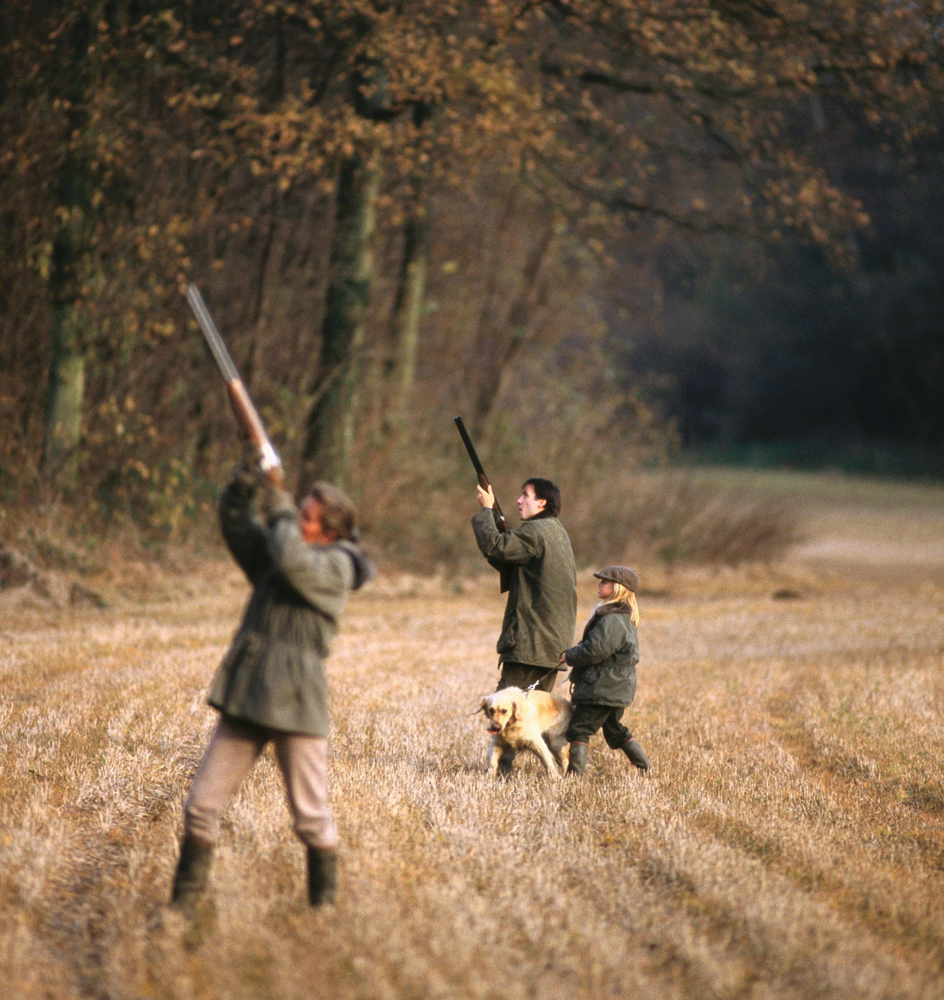

Episode 54 · August 01, 2026 · 2132
Dove Hunting and getting your dog ready for the hunt!

About This Episode
In this episode we talk about dove hunting. We talk about how to hunt doves and how to get your dog ready for the dove hunt. Being the first hunt of the year typically, a lot can go into this hunt getting your dog ready for a successful dove hunt. Good luck hunting and training everyone! Thanks for listening!
Questions about the training topics in this episode? Tyce works with bird dog owners and hunters through Utah Bird Dog Training. Reach out to work with him directly.
Resources & Links
- The Gunshy Fix — Sound conditioning program for gunshy dogs.
- Kuranda Dog Beds — Elevated, chew-proof dog beds.
- Utah Bird Dog Training — Tyce's professional training services.
Transcript
Full transcript for Episode 54: Dove Hunting and getting your dog ready for the hunt!.
Tyce
Hey folks, welcome to the Bird Dog Podcast. My name is Tyce, and I'll be your host today. Hope everyone's having a great day — thanks for tuning in. I appreciate you listening and supporting the show. It's fun to get to talk about things I genuinely enjoy, and hopefully you guys pick up something useful as we cover different topics in the bird dog world.
Today I'm recording outside, so I'm not in the studio. I like to take my remote mics out occasionally, so you may hear some background noise — I'm sitting by a hummingbird feeder on the back of the house. I'm sure you're all outdoor people, so hopefully that's all right.
Today's topic is getting your dog ready for the dove hunt. Here in Utah we're about a month out from the opener — it typically falls on the first Monday of September, right around the 1st. One thing I'll say as a side note: Utah can be tough for doves because we'll get a storm front push through and the birds will move out before you can really get into them. Hopefully the warmer weather this year keeps them around a little longer. Time will tell.
Before we talk dogs, I want to cover how you actually hunt doves, because the game plan matters. Here in Utah we're hunting two species: mourning doves and Eurasian collared doves. The collared dove is an invasive species that has done really well and spread throughout the state. They can actually be hunted year-round in Utah with no limit, which is pretty cool — though not many people specifically target them in summer. In the fall and winter they tend to congregate in larger groups and hit grain sources hard, especially around silos and feedlots.
Collared doves are interesting birds. They're about halfway in size between a mourning dove and a pigeon. They like to hang around houses and nest in pine trees — you'll typically find them out in the country where pines are close to ag ground. Mourning doves are more widespread and tend to nest in woody deciduous trees like Siberian elms. They build a simple stick-frame nest. Their incubation is short — around 14 days — and the chicks grow fast, similar to pigeons. Both species will overlap in the same areas and generally coexist around food sources.
When it comes to finding doves, think about their daily routine: roost, feed, gravel, water, back to roost. They move most aggressively at first light and in the last couple hours of daylight. If you want to intercept birds, you need to be at one of those locations — a food source, a roost, or a water source. If you can find a spot that has all three close together, you've found the Mecca.
In Utah, wheat fields and sunflower fields are your highest-percentage food sources for mourning doves. You'll also find them in corn and barley. Collared doves will hammer corn hard, especially later in the season. For water, they prefer a gently sloped muddy bank where they can get down to the water easily.
Morning doves roost in the foothills — cedars and junipers, Russian olives, cottonwoods, and any decent tree line near ag ground. Scouting is the key. Drive around, find where birds are congregating on a food source, and set up there. If you roll up to a random sagebrush flat hoping something flies by, it can be a long morning. Get on the X first.
Quick note on permission: in Utah, if a field is cultivated — even if it isn't posted — going on it without permission is trespassing. You need written permission from the landowner. Go knock on doors, ask, and if you get permission, take care of those people. Bring them something, clean up your shells, leave no trace. That's what keeps landowners opening their gates to hunters year after year. There are also good public land opportunities where you can hunt sunflowers, ponds, and similar spots without needing private access.
Now let's talk dogs. The most important thing for dove hunting is steadiness. It's essentially a waterfowl hunt — your dog sits beside you, birds work in or pass by, you shoot, and your dog marks the fall and holds until you release it. No different than a duck blind. You want your dog comfortable with gunfire, including shots fired right over its head and multiple shots in a row. Do not take a dog out for the first hunt of the year and use it as a "let's see if they're okay with guns" test. That's how you create a problem. Do your gunfire conditioning work beforehand.
Doves are also a great training opportunity for young dogs. It's a marking game — birds in the air, shot, dog marks the fall, makes the retrieve. The mechanics are exactly the same as duck hunting. If you're building a young retriever, dove season is a fantastic low-pressure way to get them real birds and reinforce everything you've been working on in training.
One thing that catches people off guard is scenting. Doves produce a smaller scent cone than most upland birds, and in the heat of early September, your dog is panting through its mouth rather than drawing air through its nose. That combination can make finding downed doves genuinely hard. If your dog is struggling to smell a bird, don't get frustrated — just help them get close, get downwind, and give the dog the chance to pick up the scent. You can toss the bird a short distance and let the dog retrieve it to get the smell locked in. Each bird after that gets a little easier.
A good force fetch program or solid hold work pays off here. Doves are light-boned and feather easily, so a dog that isn't delivering cleanly to hand can destroy a bird. You want a reliable hold so you actually get the meat back in usable shape.
On concealment — doves aren't as wary as ducks. Their eyesight isn't as sharp. You can generally get away with sitting in a chair in camo, staying still, and they won't flare hard. That said, if you're in the shade, blended in, and holding still, you'll get shots you otherwise wouldn't. The more serious you are about it, the better your results.
Decoys work really well. A Mojo spinning-wing decoy on the ground with a few static decoys around it — set up like a duck spread — will pull birds right in if you're on a food source. Last season we had mourning doves and collared doves dropping into our decoys in an open wheat field. Your dog gets to sit there, watch birds working in, mark the shots, and make back-to-back retrieves. It's a great experience for any retriever.
That's pretty much it for dove hunting and getting your dog ready. Find the birds first, then execute. Obedience, steadiness, gunfire conditioning, and a reliable retrieve are the tools you need. If you've put in the work, dove season is a reward — a fun, fast-paced hunt that's also great early-season conditioning for your dog before bigger hunts arrive.
Thanks for listening today. If you've got anything to add, send a voicemail or DM — I'd love to hear it. And send pictures from your dove hunt to thebirddogpodcast@gmail.com. We love seeing the dogs in action.
About the Host
Tyce Erickson
Tyce Erickson is a professional bird dog trainer and the owner of Utah Bird Dog Training in Utah. For nearly two decades he has worked with pointing dogs, retrievers, and family hunting dogs — helping owners build dogs that are capable and enjoyable in the field. The Bird Dog Podcast is an extension of that work: honest conversations on training, hunting, breeding, and everything that goes into a life spent working dogs.
More About Tyce